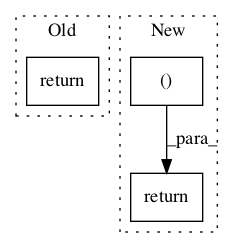

Pattern ID :292
Before Change
if word[-1] == "y" and len(word) > 2 and self._cons(word, len(word) - 2):
return word[:-1] + "i"
else:
return word
def _step2(self, word):
step2() maps double suffices to single ones.After Change
def original_condition(stem):
return self._contains_vowel(stem)
return self._apply_rule_list(word, [
(
"y",
"i",
nltk_condition if self.mode == self.NLTK_EXTENSIONS
else original_condition
)
])
def _step2(self, word):In pattern: SUPERPATTERN
Frequency: 4
Non-data size: 3
Instances Fragment ID: 920936
Project Name: nltk/nltk
Commit Name: d8402e3f43ce3b7a3c7ecb45c3b8b1f75c7124e2
Time: 2016-09-10
Author: markamery@btinternet.com
File Name: nltk/stem/porter.py
Class Name: PorterStemmer
Method Name: _step1c
Fragment ID: 920937
Project Name: nltk/nltk
Commit Name: 699822356170667e8507d4efe344724ef0011b54
Time: 2010-09-21
Author: stevenbird1@gmail.com
File Name: nltk/align.py
Class Name: AlignedSent
Method Name: __str__
Fragment ID: 920935
Project Name: nltk/nltk
Commit Name: ce74e449dc9526e19596b1c4a9c510bbb35812cc
Time: 2019-08-11
Author: ilia.kurenkov@gmail.com
File Name: nltk/lm/smoothing.py
Class Name: KneserNey
Method Name: alpha_gamma
Fragment ID: 920933
Project Name: nltk/nltk
Commit Name: 394a1a2ae2f1aacf0b3b4ca83b1e6150a6ff1fa6
Time: 2002-05-06
Author: edloper@ldc.upenn.edu
File Name: src/nltk/draw/tree.py
Class Name: TreeView
Method Name: _draw_expanded_children